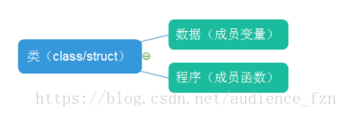
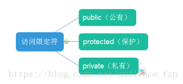
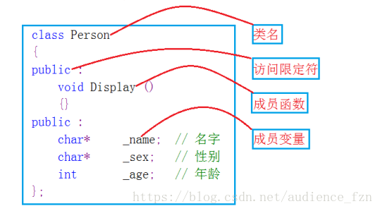

一、面向对象:
概念：面向对象程序设计（OOP）是一种程序设计的泛型，同时也是一种程序开发的方法， 它将对象作为程序的基本单元，将程序和数据封装其中，以提高软件的重用性、灵活性和扩展性。
一、面向对象:
概念：面向对象程序设计（OOP）是一种程序设计的泛型，同时也是一种程序开发的方法， 它将对象作为程序的基本单元，将程序和数据封装其中，以提高软件的重用性、灵活性和扩展性。
二、类和对象的概念:
1.类：类是现实世界在计算机中的反映，它将数据和对这些数据的操作封装在一起（并没有开空间）。
2. 对象：类的实例（占有实际的空间）。
1.类相当于盖楼房的图纸一样，虽然定义了有哪些成员，但并没有实际的空间
2.类可以实例化出多个对象，实例化出的对象占有实际空间（用来存储成员变量）
三、类的三大特性：
1.封装 2.继承 3.多态 封装：函数的封装是一种形式，隐藏对象的属性和实现细节（函数内部），仅仅对外提高函数的接口和对象进行交互。 类的访问限定符可以协助其完成封装。
四、类的三个访问限定符:
1.public：公有的，类的成员可以从类外直接访问。
2.private/protected：类的成员不能从类外直接访问。
3.类的每个访问限定符可以多次在类中使用，作用域为从该限定符开始到下一个限定符之前/类结束。
4.类中如果没有定义限定符，则默认为私有的（private） 。
5.类的访问限定符体现了类的封装性。
五、类的定义:
1.定义一个简单的类
2.类的对象可以直接通过 . 来访问类的公有成员，类的对象指针可以通过->来访问类的公有成员
3.类外定义成员函数，需要使用::（作用域解析符）指明其属于哪个类。